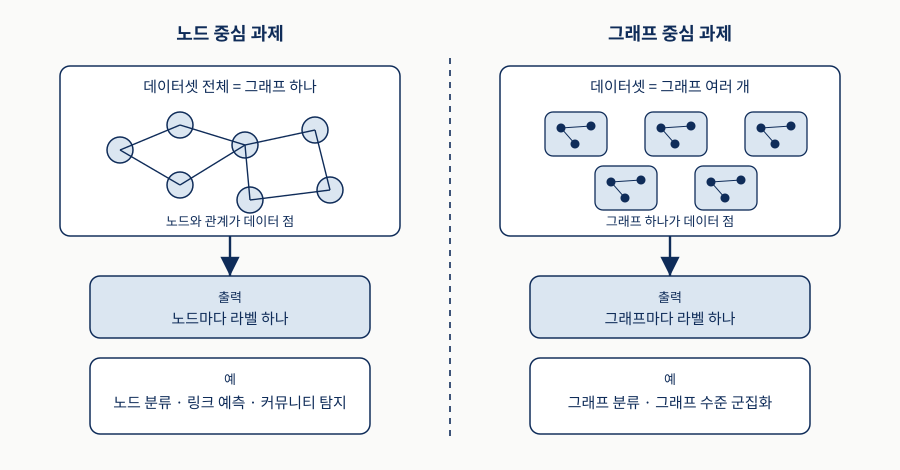
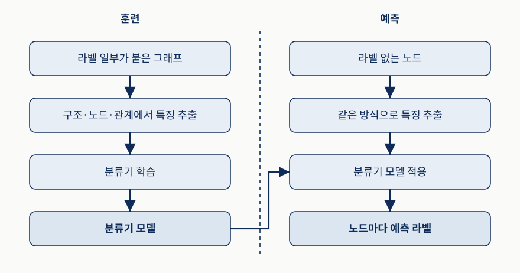
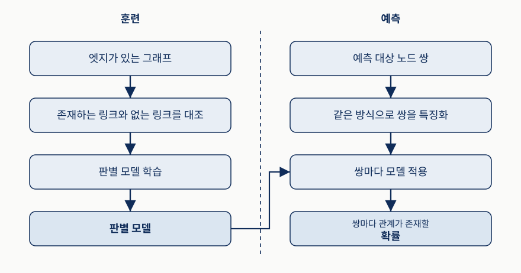
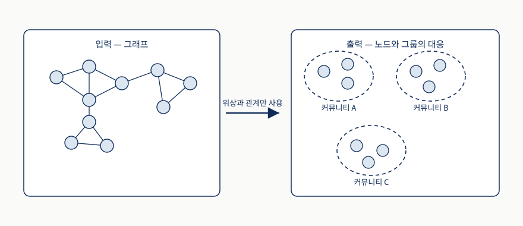
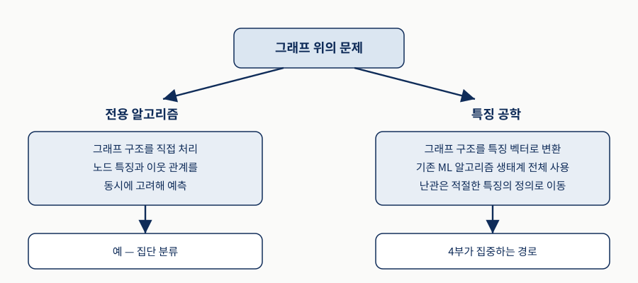
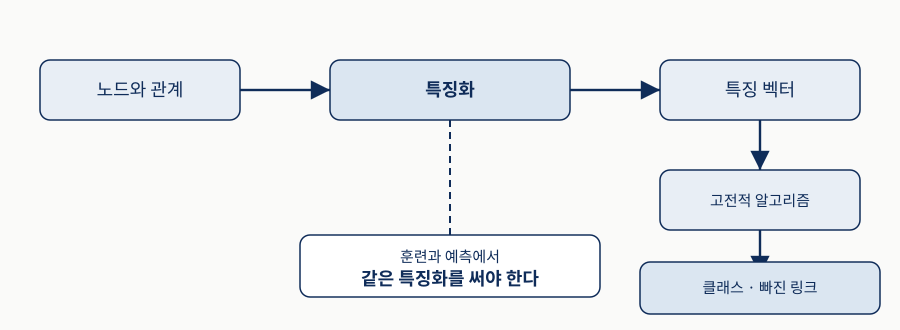
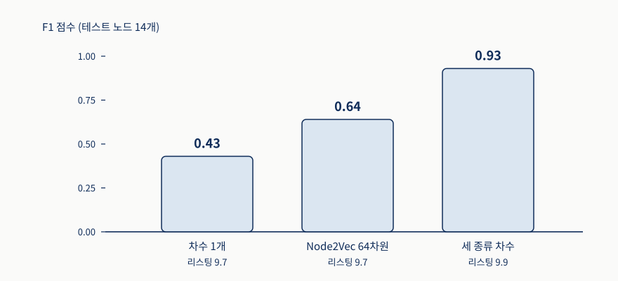

구조와 개체의 복잡함
신경망 기반 표현이 그래프 구조와 그 안의 엔터티가 지닌 복잡함을 그대로 포착합니다.
Knowledge Graphs and LLMs in Action
Chapter 9
표현 학습과 그래프 신경망이 그 전환을 맡습니다
신경망 기반 표현이 그래프 구조와 그 안의 엔터티가 지닌 복잡함을 그대로 포착합니다.
구조화된 정보를 벡터 공간에 효과적으로 담아냅니다.
유연한 특징 표현이 분류부터 링크 예측까지 다양한 하위 작업을 뒷받침합니다.
학습된 임베딩을 해석하면 지식을 자동으로 추출하는 일까지 가능해집니다.
비유 — 도서관의 장서 목록은 어떤 책이 어느 서가에 있다는 사실을 정확히 적어 두지만, 그것만으로는 이 책을 빌린 사람이 다음에 무엇을 빌릴지 맞히지 못합니다. 대출 기록과 책 사이의 관계를 숫자로 바꿔 두어야 추천이 가능해집니다. 장서 목록은 그래프에 멈춰 있는 지식, 관계를 숫자로 바꾸는 일은 표현 학습에 해당합니다.
그래프가 정확한데도 그대로는 머신러닝에 쓰이지 못하는 상황을 푸는 것이 4부입니다.
이 회차는 아직 칼을 잡기 전 단계입니다
| 장 | 다루는 것 |
|---|---|
| 9장 | 머신러닝을 지식 그래프에 적용하는 기본 개념과 동기 |
| 10장 | 그래프 기반 머신러닝에서 수동·반자동으로 특징을 만들어 내는 방법 |
| 11장 | 그래프 신경망이 그래프 구조로부터 최적의 표현을 자동으로 학습하는 방법 |
| 12장 | 두 개의 실제 사례로 개념을 실행해 보이고 해석 가능성을 유지하며 문제를 푸는 방법 |
비유 — 요리를 배우는 과정에 견주면, 왜 이 조리법이 필요한지 아는 단계, 재료를 손으로 다듬는 단계, 다듬기를 자동으로 해 주는 기계를 쓰는 단계, 실제 손님상을 차려 보는 단계로 이어지는 것과 비슷합니다.
이 장이 개념 위주인 이유는 4부의 첫 장이기 때문입니다.
이 평행선이 이 책 전체를 관통하는 주제를 드러냅니다
A
둘 다 문맥에서 배웁니다. 이 평행선은 구조화된 지식 표현과 진보한 머신러닝 기법의 결합이라는 이 책의 더 큰 주제를 잘 드러냅니다.
B
대규모 언어 모델은 아는 것이 많지만 가끔 없는 사실을 그럴듯하게 지어내는 달변가에 가깝고, 지식 그래프는 검증된 사실만 적어 둔 사실 대장에 가깝습니다.
비유 — 한 사람은 실제로 골목을 수없이 걸어 다니며 이 길 다음에는 저 길이라는 감각을 익히고, 다른 사람은 여행기를 읽으며 이 동네 다음에는 저 동네가 자주 언급된다는 감각을 익힙니다. 앞은 그래프 위를 이동하며 이웃 문맥을 배우는 표현 학습, 뒤는 언어 모델의 접근에 해당합니다.
4부는 그 사실 대장을 학습 가능한 형태로 만드는 작업을 다룹니다.
이 장을 읽고 나면 다음 세 가지를 할 수 있습니다
비유 — 새 업무를 맡을 때 첫날의 목표가 일을 잘하기가 아니라, 이 부서가 다루는 일의 종류를 구분하고 각 일에 어떤 자료가 입력으로 들어가는지 아는 것인 상황과 비슷합니다. 일의 종류 구분은 두 번째 목표에, 입력 자료를 아는 것은 세 번째 목표에 해당합니다.
세 목표 모두 알고리즘을 만드는 것이 아니라 지형을 익히는 데 있습니다.
지식 그래프를 잘 만드는 일은 똑똑한 시스템 개발의 결정적 단계입니다
그래프에 질의를 던지고 관련 정보를 뽑아내는 법, 노드와 관계 유형을 따라 항해하는 법, 임포트 과정을 검증하고 저장된 지식의 품질을 평가하기 위해 통계 정보를 추출하는 법입니다.
사용자에게 통찰을 찾아 주는 지능형 자문 시스템(IAS)을 만드는 데 꼭 필요한 단계였습니다.
비유 — 병원에서 진료 기록·검사 결과·처방 이력을 한 곳에 모아 두는 일과, 그 기록을 보고 이 환자에게 무엇을 권할까를 판단하는 일은 다른 단계입니다. 앞이 없으면 뒤도 없지만, 앞만으로는 권고가 나오지 않습니다.
마지막 단계는 이 장이 다루는 머신러닝이 맡습니다.
이런 시나리오는 대부분 그래프를 입력으로 받는 머신러닝을 필요로 합니다
A
질병·단백질·유전자·화합물이 뒤섞인 거대한 지식 그래프에서, 연구자가 신약 후보를 기존 약에서 찾는 기회를 효율적으로 항해하며 찾아냅니다.
B
임상의가 환자의 증상과 DNA 서열을 문헌·임상시험·표준 프로토콜과 결합해 치료 계획을 세웁니다.
비유 — 오래 일한 사서는 이 주제를 찾으신다면 저쪽 서가의 이 책도 보세요라고 말해 줍니다. 이용자가 검색어만으로는 도달하지 못했을 책이며, 사서가 그렇게 말할 수 있는 이유는 책과 주제와 이용자 사이의 연결을 오래 봐 왔기 때문입니다. 사람이 손으로 하기에는 연결이 너무 많다는 점이 머신러닝이 필요한 이유입니다.
9장부터 12장까지가 이 영역을 다루며, 이제는 프로덕션에서 쓸 만큼 안정된 라이브러리도 함께 이야기합니다.
각 절이 던지는 질문과 이 장의 답
| 절 | 묻는 것 | 이 장의 답 |
|---|---|---|
| 9.1 | 왜 그래프 위에서 머신러닝을 하는가 | 보편적 표현, 문제의 수렴, 데이터 항목 간 의존성 |
| 9.2 | 무엇을 과제로 삼는가 | 노드 중심 과제와 그래프 중심 과제 |
| 9.3 | 어떻게 구현하는가 | 전용 알고리즘이거나 특징 공학 |
9.3의 실습에서 같은 분류기로 F1이 0.43에서 0.93까지 달라집니다.
SECTION 01 · 교재 §9.1
왜 이 접근이 때로는 최선의, 심지어 유일하게 실현 가능한 선택이 되는가.
세 이유는 서로 독립된 장점이 아니라 하나의 논증입니다
| 이유 | 내용 |
|---|---|
| 데이터 표현 | 행렬·텐서부터 시퀀스·시계열까지 제각각인 데이터를 담는 보편적 데이터 표현을 제공한다 |
| 문제 모델링 | 엄청나게 많은 문제가 그래프 계산 과제라는 작은 집합으로 다뤄질 수 있다 |
| 데이터 항목 간 의존성 | 전통적 머신러닝의 독립·동일분포 가정과 달리 현실 데이터는 본질적으로 서로 연결되어 있다 |
비유 — 회사의 흩어진 자료를 한 형식으로 모으는 상황을 생각해 봅시다. 엑셀 표·조직도·매출 추이·결재 이력이 제각각인데 누가 누구와 무엇을 주고받았는가라는 형식으로 옮기면 모두 담깁니다. 그리고 이렇게 모으고 나면 이 사람은 어느 팀 성향인가와 이 두 사람이 협업할까라는 몇 가지 질문으로 분석이 정리됩니다.
관계를 무시하면 불완전하거나 잘못된 결과로 이어집니다.
이 수렴이 그래프 위 머신러닝을 배울 값어치를 만듭니다
A
이상 노드를 탐지하는 일과 환자에게 약을 추천하는 일은 모두 노드 분류 문제로 요약할 수 있습니다.
B
추천을 만드는 일과 상호작용을 식별하는 일은 본질적으로 관계 예측 문제입니다.
전통적인 알고리즘은 데이터 항목들이 서로 독립이고 동일한 분포를 따른다고 가정하지만, 현실의 많은 사용 사례에서 항목들은 본질적으로 연결되어 있습니다. 데이터를 그래프로 저장하면 그 관계를 자연스럽게 담아 더 좋은 결과를 얻을 수 있습니다.
과제 종류를 익혀 두면 새 문제를 만났을 때 어디에 넣을지 정할 수 있습니다.
그래프 신경망과 대규모 언어 모델은 서로 다른 능력을 가져옵니다
A
복잡한 구조적 패턴을 탐지합니다. 개인 맞춤 의료에서는 환자 유사도 네트워크와 생물학적 경로 그래프를 처리합니다.
B
자연어를 이해하고 생성합니다. 의학 문헌과 임상 지침을 종합해 치료 근거를 명료한 의학 용어로 설명합니다.
비유 — 건강검진에서 판독의는 영상 속 미세한 음영을 잡아내고, 상담의는 그 소견을 환자가 알아들을 말로 옮기며 다음에 무엇을 해야 하는지 알려 줍니다. 두 역할 중 하나만 있으면 검진 결과가 행동으로 이어지지 않습니다. 원문의 비유로는 GNN이 사실 대장에서 숨은 연결을 짚어내고 달변가인 LLM이 사람의 말로 풀어 주는 협업입니다.
통찰이 최종 사용자에게 이해되고 실행 가능해집니다.
남는 기준은 도구의 유행이 아닙니다
최종 목표를 이루고 비즈니스 문제를 풀기 위해 쓸 수 있는 최선의 도구를 원하는 것이 출발점입니다. 이 장에서 다룰 여러 시나리오에서 그래프 머신러닝은 화살통 속 가장 좋은 화살이 되어 줍니다.
다음 절은 그 화살로 무엇을 맞힐 수 있는지를 정리합니다.
SECTION 02 · 교재 §9.2
지도와 비지도의 구분은 여전히 유효하지만 가장 유용한 잣대는 아닙니다.
가장 흔한 분류 방식부터 확인합니다
A
일부 데이터 항목의 정답 출력이 알려져 있고 목표는 나머지의 라벨을 예측하는 것입니다. 스팸 필터가 각 이메일의 스팸 여부 라벨로부터 분류를 배우는 것이 대표적입니다.
B
데이터에 라벨이 전혀 없고 목표는 통찰과 패턴을 뽑아내는 것입니다. 데이터 점 집합에서 군집을 찾거나 그래프에서 커뮤니티를 찾아내는 일이 여기 속합니다.
비유 — 과일 상자를 정리할 때 몇 개에만 사과·배 스티커가 붙어 있고 나머지를 같은 기준으로 마저 붙이는 일과, 스티커가 하나도 없는 상태에서 크기와 색이 비슷한 것끼리 무더기를 만드는 일은 다른 작업입니다.
그래프 위에서도 이 구분은 유효합니다. 노드 분류는 지도, 커뮤니티 탐지는 비지도입니다.
입력과 출력의 모양이 아예 달라지기 때문입니다
A
데이터셋 전체가 하나의 그래프로 표현되며 노드와 관계가 데이터 점이 됩니다.
B
데이터가 여러 그래프의 집합으로 이루어지며 각 데이터 점이 그래프 하나 전체입니다.
비유 — 학교 하나의 학생 관계망을 분석하는 일과, 여러 학교의 관계망을 나란히 놓고 이 학교는 분위기가 화목한 편인가를 판정하는 일은 다릅니다. 앞은 학생 한 명 한 명이 분석 단위이고 뒤는 학교 하나가 분석 단위입니다.
이 구분이 지도·비지도 구분보다 유용한 이유는 입출력 모양이 달라지기 때문입니다.
위쪽 데이터 모양, 가운데 출력 단위, 아래쪽 해당 과제 순서로 좌우를 대조합니다

수백만 사용자 중 봇을 찾아내는 문제에서 출발합니다
봇은 이용약관을 위반하거나 가짜 뉴스를 퍼뜨리거나 마케팅 캠페인의 무의미한 대상이 될 수 있어 탐지가 중요하지만, 수백만 명을 손으로 일일이 식별하는 것은 현실적으로 불가능합니다.
손으로 라벨을 붙인 소수의 예시만 주어졌을 때 사용자를 봇 혹은 정상으로 구분해 주는 모델입니다. 이것이 노드 분류 과제의 전형적인 예입니다.
적은 라벨로 전체를 덮는 것이 이 과제의 출발 조건입니다.
표기를 변수별로 풀어 봅니다
| 요소 | 무엇인가 | 봇 탐지에서는 |
|---|---|---|
| 전체 노드 집합 | 그래프의 노드 전체 | 소셜 네트워크의 모든 사용자 |
| 라벨 없는 개별 노드 | 그중 정체를 알고 싶은 노드 하나 | 정체를 알고 싶은 사용자 |
| 예측하려는 라벨 | 그 노드에 대해 예측할 값 | 봇 또는 정상 |
| 훈련 노드 집합 | 전체의 작은 부분집합으로 정답 라벨이 이미 알려져 있다 | 손으로 라벨링한 소수의 예시 |
비유 — 대형 단체 대화방에서 광고 계정을 걸러낼 때 수십만 명을 일일이 볼 수 없고, 운영진이 손으로 확인한 몇십 개의 계정만 광고 또는 일반으로 표시되어 있습니다. 나머지는 그 표시된 계정들과 누구와 이야기했는지를 보고 판단해야 합니다.
훈련 집합이 전체에 비해 아주 작다는 점이 이 과제의 조건입니다.
분야가 달라도 푸는 구조는 하나입니다
사람 사이의 연결을 보고 봇인지 정상 사용자인지 맞힙니다.
단백질 사이의 상호작용을 보고 단백질의 기능을 분류합니다.
문서 사이의 인용을 보고 문서의 주제를 분류합니다.
노드 분류는 지능형 자문 시스템을 구현할 때 식별과 의사결정을 돕는 강력한 도구입니다.
문제가 몇 가지 표준 과제로 수렴한다는 9.1절의 주장이 여기서 확인됩니다.
두 열을 따로 읽은 뒤 아래에서 모델이 건너가는 화살표를 봅니다

이것이 표준 지도 분류와 갈리는 결정적 지점입니다
지도 모델을 만들 때 우리는 각 데이터 점이 다른 모든 데이터 점과 통계적으로 독립이라고 가정하고, 동일하게 분포한다고 가정해야 보지 못한 데이터에도 일반화된다고 기대합니다.
독립된 데이터 점들의 집합을 모델링하는 대신 서로 얽힌 노드들의 네트워크를 모델링하고 있습니다. 훈련 단계는 그래프를 입력으로 받아 구조·노드·관계 속성을 활용해 특징을 추출합니다.
비유 — 설문 조사에서 응답자 1,000명을 무작위로 뽑으면 한 사람의 답이 다른 사람의 답에 영향을 주지 않는다고 가정할 수 있지만, 같은 동아리 회원 1,000명에게 물으면 서로 이야기를 나눈 사이라 답이 닮아 갑니다.
이 노드가 어떤 노드인가를 그 노드 자신뿐 아니라 주변 연결까지 함께 봐서 요약해야 합니다.
어떤 패턴이 작동하는지를 알아야 특징을 설계할 수 있습니다
| 패턴 | 두드러지는 그래프 | 무엇을 뜻하는가 |
|---|---|---|
| 동종선호 | 소셜 네트워크 | 노드가 관계를 통해 서로 영향을 주고받으며 이웃과 관심사·속성·행동을 공유한다 |
| 구조적 등가성 | 단백질 상호작용 네트워크 | 이웃 구조가 비슷한 노드들은 기능적 성질도 비슷하게 공유한다 |
| 이종선호 | 그 밖의 유형 | 노드가 자신과 특성이 다른 노드와 연결되기를 선호한다 |
비유 — 사람을 파악하는 방법은 두 가지입니다. 누구와 어울리는지를 보는 방법은 친한 사람들이 비슷하다는 전제여서 동종선호에, 조직에서 어떤 자리에 있는지를 보는 방법은 비슷한 자리면 하는 일이 비슷하다는 전제여서 구조적 등가성에 해당합니다. 두 사람이 서로 모르는 사이여도 자리가 같으면 역할이 같을 수 있습니다.
성공적인 노드 분류는 노드의 속성과 상호의존 관계를 함께 모델링해야 합니다.
원문이 별도 박스로 다루는 물음입니다
A
훈련할 때 우리는 라벨 없는 노드까지 포함한 전체 그래프에 접근할 수 있고, 놓치고 있는 것은 오직 테스트 노드의 라벨뿐입니다. 테스트 노드의 이웃이 어떤지 같은 정보를 훈련 중에 활용해 모델을 개선할 수 있습니다.
B
준지도 학습의 표준적 정식화는 i.i.d. 가정을 요구하는데 노드 분류에서는 그 가정이 성립하지 않습니다. 저자들도 이 정의를 놓고 여전히 고민한다고 솔직히 밝힙니다.
비유 — 시험 문제를 미리 다 받아 보되 답만 모르는 상황과, 문제 자체를 시험장에서 처음 보는 상황은 다릅니다. 앞에서는 문제들 사이의 유형과 난이도 배치를 미리 살펴 대비할 수 있습니다.
그래프 머신러닝 과제가 고전적 범주에 쉽게 들어맞지 않는다는 것을 보여 주는 대목입니다.
Flickr의 그룹 구독 정보가 그 예입니다
사진을 호스팅할 뿐 아니라 사용자들이 서로 팔로우하는 온라인 소셜 커뮤니티여서 이 연결로 하나의 네트워크가 형성됩니다. 사용자가 구독하는 관심 그룹 정보는 관심사를 나타내므로 라벨로 쓸 수 있습니다.
한 사용자가 여러 그룹을 구독할 수 있으니 각 사용자는 여러 라벨과 연결되며, 다중 라벨 노드 분류는 아직 구독하지 않았지만 관심을 가질 만한 잠재 그룹을 예측합니다.
비유 — 사람의 취미를 하나만 적게 하면 정보가 줄어듭니다. 등산·사진·요리를 모두 적게 하고, 아직 적지 않았지만 좋아할 만한 취미를 주변 사람들의 취미에서 추정하는 편이 실제에 가깝습니다.
라벨이 하나여야 한다는 제약은 과제의 성질이 아니라 설계 선택입니다.
공저 그래프에서 아직 없는 협업을 예측합니다
여러 분야의 연구 논문 데이터베이스로부터 저자를 노드로 삼고, 두 저자가 적어도 한 편의 논문을 함께 썼다면 그들 사이에 엣지를 놓습니다.
아직 함께 일해 본 적 없는 저자들 사이에 앞으로 생길 법한 협업입니다. 이 접근은 법 집행이나 보안 응용 같은 영역으로도 자연스럽게 확장됩니다.
비유 — 결혼식 하객 명단을 보고 아직 서로 모르지만 같은 테이블에 앉으면 잘 맞을 두 사람을 짚어 내는 일과 비슷합니다. 판단 근거는 두 사람이 각각 누구와 아는 사이인지, 그 아는 사람들이 얼마나 겹치는지입니다.
링크 예측은 그래프 기반 머신러닝의 기본 과제 중 하나입니다.
모양은 같아 보여도 성격이 다릅니다
A
연결이 실제로 존재하지만 관측되거나 기록되지 않았거나, 어떤 경우에는 네트워크의 핵심 인물들이 일부러 감춰 둔 것입니다.
B
많은 그래프는 본래 계속 진화합니다. 학술 협업 그래프의 저자는 새 논문을 쓰면서 언제든 다른 저자와 새 협업 관계를 맺을 수 있습니다.
비유 — 오래된 가족 관계도를 정리하다 보면 두 종류의 빈칸이 나옵니다. 실제로 있었지만 기록이 남지 않은 관계와, 아직 태어나지 않아 앞으로 생길 관계입니다.
응용 — 친구 추천, 상품 추천, 지식 그래프 완성, 약물 부작용 예측, 관계형 데이터베이스에서 새 사실 추론, 단백질-단백질 상호작용 발견, 범죄 정보 분석.
빠진 엣지를 추론하거나 예측하는 일이 여러 자문 시스템에 도움이 됩니다.
두 열을 따로 읽고 마지막 줄의 출력 모양을 비교합니다

응용 분야에 따라 링크 예측, 그래프 완성, 관계 추론으로 불립니다
A
보통 두 노드 사이에 연결이 존재하는지를 예측하는 데 초점을 둡니다. 이때 관계의 유형은 일관되게 동일하고 미리 정해져 있습니다.
B
연결의 존재뿐 아니라 그 관계의 유형까지 짚어내고자 할 때 주로 씁니다.
비유 — 두 사람 사이에 선을 긋는 일과, 그 선에 동료·가족·이웃 중 무엇인지 이름표를 다는 일은 난이도가 다릅니다. 앞은 있다 없다만 답하면 되고 뒤는 종류까지 맞혀야 합니다.
노드 분류와 마찬가지로 링크 예측도 대개 준지도로 접근합니다. 기존 연결의 예시와 노드 수준의 풍부한 정보를 함께 활용해 잠재적 관계를 추론합니다. 아직 서로 모르는 두 사람의 궁합을 볼 때 이미 잘 지내는 짝들의 공통점을 참고하는 것과 같습니다.
이 책에서는 두 용어를 서로 바꿔 가며 씁니다.
협업 그래프는 고른 털 뭉치가 아니라 군집으로 나뉩니다
연구 분야·소속 기관·지리적 요인입니다. 같은 대학의 두 연구자가 협업할 성향은 멀리 떨어진 동료들끼리보다 높고, 같은 분야의 두 연구자는 무관한 영역보다 그 분야의 다른 연구자를 인용할 가능성이 큽니다.
비유 — 큰 아파트 단지의 주민 관계를 그려 보면 모두가 골고루 아는 사이가 아닙니다. 같은 동, 같은 층, 아이가 같은 학교인 사람들끼리 훨씬 촘촘하게 묶입니다. 모두가 골고루 아는 상태가 촘촘한 털 뭉치에, 실제로 묶이는 현상이 뚜렷한 노드 군집에 해당합니다.
이 자연스러운 군집 행동이 커뮤니티 탐지 알고리즘의 이론적 토대입니다.
안쪽은 빽빽하고 바깥과는 성긴 무리를 갈라내는 것이 목표입니다
커뮤니티 탐지는 네트워크의 나머지 부분과의 연결에 비해 내부 연결이 더 촘촘한 노드 무리를 식별하며, 커뮤니티 내부의 실제 엣지 밀도와 기대 엣지 밀도의 차이를 최적화함으로써 모듈성을 극대화합니다.
비유 — 어느 모임이 진짜 모임인지 판단할 때 안에서 자주 만나는가만 보면 부족합니다. 인원이 많으면 우연히도 자주 만나게 되기 때문입니다. 우연히 예상되는 만남 횟수보다 실제 만남이 얼마나 더 많은지를 봐야 합니다. 실제 만남이 실제 엣지 밀도, 우연히 예상되는 횟수가 기대 엣지 밀도에 해당합니다.
차이를 크게 만드는 분할을 찾는 일이 모듈성 극대화입니다.
왼쪽 입력에서 선이 빽빽한 구역을 찾고 오른쪽 묶음과 대조합니다

응용은 생명과학부터 금융까지 이릅니다
A
노드의 속성을 쓰지 않습니다. 오직 네트워크의 위상과 관계만을 이용해 숨어 있는 잠재적 그룹 구조를 드러냅니다.
B
유전자 상호작용 네트워크에서 기능적 모듈을 식별하는 일부터, 금융 거래 네트워크에서 사기 사용자 무리를 탐지하는 일까지 이릅니다.
비유 — 통화 기록만 가지고도 어느 번호들이 한 조직인지 짐작할 수 있습니다. 각 번호의 명의나 직업을 몰라도, 누가 누구와 얼마나 자주 통화했는지만으로 무리가 드러납니다.
속성 정보가 없는 그래프에서도 쓸 수 있다는 점이 이 과제의 강점입니다.
가장 강력한 응용 중 하나입니다
촘촘하게 연결된 영역을 식별함으로써 네트워크가 어떻게 구성돼 있는지를 더 높은 자리에서 내려다볼 수 있습니다. 직접 시각화하거나 손으로 전부 분석하기가 불가능한 대규모 그래프를 다룰 때 특히 값집니다.
비유 — 수만 명이 오간 대화 기록 전체를 읽을 수는 없지만, 이 시기에는 크게 네 무리가 있었고 각 무리는 이런 주제를 다뤘다는 요약은 읽을 수 있습니다.
복잡하게 얽힌 관계를 구조로 간추려 보여 줍니다.
K-means와 DBSCAN을 나란히 놓고 봅니다
| 방법 | 입력 | 군집 개수 | 작동 방식 |
|---|---|---|---|
| K-means | 벡터 공간의 독립적 데이터 점 | 미리 지정해야 한다 | 각 점을 가장 가까운 군집 중심에 반복 배정하고 중심을 갱신한다 |
| DBSCAN | 벡터 공간의 독립적 데이터 점 | 미리 정할 필요가 없다 | 빽빽하게 모인 점들을 묶고 밀도가 낮은 점은 이상치로 표시한다 |
| 그래프 군집화 | 관계로 얽힌 노드 | 방법에 따라 다르다 | 노드 사이의 관계가 그룹 소속을 결정한다 |
비유 — 사람들을 나눌 때 다섯 조로 나누라는 지시를 받고 줄을 세워 자르는 방식과, 붙어 서 있는 사람들끼리 묶고 혼자 떨어진 사람은 따로 두라는 방식은 결과도 전제도 다릅니다.
사람들을 키와 몸무게 좌표로 묶는 일과, 함께 일하는 관계만으로 팀을 가르는 일은 입력 자체가 다릅니다.
미리 라벨링된 정보 없이 커뮤니티 구조를 찾습니다
그래프 군집화는 일반적으로 비지도 학습이며 커뮤니티 구조를 찾는 데 미리 라벨링된 정보가 필요 없습니다.
라벨 전파 같은 일부 군집화 접근은 기존 라벨을 반영해 커뮤니티 배정을 이끌 수 있어, 그래프 분석에서 지도와 비지도 사이의 간극을 메워 줍니다.
비유 — 처음부터 아무 정보 없이 무리를 가르는 방법과, 몇 사람의 소속만 알려 준 뒤 그 정보가 주변으로 번지게 하는 방법이 있습니다. 후자는 완전한 백지도 완전한 정답지도 아닙니다.
용어 — 네트워크 분석에서 커뮤니티 탐지와 그래프 군집화는 서로 바꿔 쓰이는 경우가 많고, 이 책도 그래프에 적용할 때 두 용어가 같은 과제를 가리키므로 바꿔 씁니다.
노드 분류·링크 예측·커뮤니티 탐지는 모두 노드 중심 과제입니다.
분자의 성질은 원자가 아니라 연결 방식에서 비롯됩니다
원자가 노드가 되고 화학 결합이 엣지가 됩니다. 이 표현 덕분에 그래프 분류 기법을 적용해 용해도나 독성 같은 여러 성질을 동시에 예측할 수 있습니다.
비유 — 요리의 맛은 재료 목록만으로 정해지지 않습니다. 같은 재료라도 어떤 순서로 무엇과 함께 조리했는지에 따라 결과가 달라지므로, 재료 목록이 아니라 조리 과정의 구조를 봐야 합니다. 재료 목록은 개별 원자, 결합된 조리 구조는 분자 구조, 완성된 요리에 맛 평가를 붙이는 일은 그래프 하나에 라벨을 붙이는 그래프 분류에 해당합니다.
원자 구성과 구조적 패턴을 함께 분석해 라벨 없는 분자를 범주화합니다.
분석 단위를 바꾸면 통계적 가정도 바뀝니다
A
하나의 그래프 안에서 개별 노드의 라벨을 예측하며, 노드들이 서로 얽혀 있어 i.i.d. 가정이 깨집니다.
B
여러 개의 독립적인 그래프를 담은 데이터셋을 다루며, 각 그래프가 자신의 라벨을 지닌 i.i.d. 데이터 점이 됩니다.
비유 — 한 학교 안의 학생들은 서로 영향을 주고받지만, 전국 여러 학교를 표본으로 뽑으면 학교와 학교는 서로 독립이라고 보아도 큰 무리가 없습니다.
같은 데이터라도 분석 단위를 바꾸면 통계적 가정이 달라진다는 점이 흥미롭습니다.
목표는 그래프 하나 전체에서 라벨로 가는 매핑을 학습하는 것입니다
라벨이 달린 그래프들의 훈련 집합을 이용해 그래프 하나 전체에서 그에 연결된 라벨로 가는 매핑을 학습합니다. 그래프 수준의 군집화도 노드가 아니라 그래프 하나 전체를 범주화합니다.
각 그래프의 내부 구조와 그 구성 요소의 성질을 함께 효과적으로 포착하는 특징을 개발하는 일입니다.
비유 — 건물 한 채를 안전하다 또는 위험하다로 판정하려면 벽돌 하나하나의 품질도 봐야 하고 기둥과 보가 어떻게 짜였는지도 봐야 합니다. 둘 중 하나만 요약한 숫자로는 판정이 어렵습니다.
구성 요소와 구조 중 하나만 담은 특징으로는 그래프 수준 판정이 어렵습니다.
전혀 다른 두 분야에서 같은 기법이 쓰입니다
A
효소는 단백질의 한 종류입니다. 단백질은 아미노산을 노드로 삼고 두 노드가 일정 거리보다 가까우면 엣지를 놓아 그래프로 표현할 수 있으며, 훈련이 끝나면 어떤 단백질이 효소인지를 예측할 수 있습니다.
B
어떤 컴퓨터 프로그램의 구문과 데이터 흐름을 그래프로 표현한 것을 분석해, 그 프로그램이 악의적인지 탐지하는 분류 모델을 만듭니다.
두 경우 모두 그래프 하나 전체에 라벨을 붙이는 문제로 환원됩니다.
SECTION 03 · 교재 §9.3
해법은 두 방향으로 개발할 수 있고, 4부는 그중 하나에 집중합니다.
두 경로의 차이는 성능이 아니라 난관이 놓이는 자리입니다
A
집단 분류처럼 그래프를 위해 특별히 설계된 알고리즘을 씁니다. 그래프 구조를 직접 처리하며 노드의 특징과 이웃 관계를 동시에 고려해 예측합니다.
B
그래프 구조를 특징 벡터로 바꿔 현대 딥러닝을 포함한 기존 알고리즘 생태계 전체를 활용합니다. 대신 난관이 적절한 특징을 정의하는 문제로 옮겨 갑니다.
비유 — 외국어 문서를 다루는 두 방법이 있습니다. 그 언어를 직접 읽는 전문가를 두는 방법과, 문서를 우리말로 번역해 기존 인력이 모두 다루게 하는 방법입니다. 후자는 번역 품질이 전체 결과를 좌우하는데, 그 번역 품질이 곧 특징의 품질입니다.
난관이 알고리즘 설계에 놓이느냐 특징 정의에 놓이느냐가 갈립니다.
위에서 갈라지는 두 화살표를 따라 좌우를 대조합니다

앞 단계를 거쳐야 무엇이 자동화되었는지 이해할 수 있습니다
먼저 수동 방법을 살펴보며 그것이 얼마나 철저한지, 동시에 얼마나 지루한 작업인지를 보여 줍니다.
그다음 반자동 접근으로 나아갑니다.
마지막에는 그래프 신경망에 뛰어듭니다. 구조적 패턴과 노드 성질을 함께 포착해 특히 불완전한 지식 그래프에 유용합니다.
비유 — 손으로 치수를 재어 옷본을 뜨는 단계, 몇 가지를 자동으로 재 주는 기구를 쓰는 단계, 몸을 스캔하면 옷본이 바로 나오는 단계로 옮겨 가는 것과 비슷합니다.
GNN이 만든 임베딩이 노드 분류 같은 하위 과제에 직접 도움이 되도록 그래프 지식을 담아냅니다.
훈련의 결과물인 예측 모델이 다음 단계의 입력이 됩니다
훈련 과정은 예측 모델을 만들어 내고, 그 모델이 훈련 단계의 출력이자 예측 단계의 입력이 되어 기존 노드와 관계로부터 클래스와 빠진 링크를 예측합니다.
비유 — 자격 시험 채점 기준을 만드는 작업과 그 기준으로 답안을 채점하는 작업이 이어지는 것과 같습니다. 기준표는 앞 작업의 결과물이자 뒤 작업의 준비물입니다.
결정적인 단계는 노드와 관계의 특징화입니다.
다르면 예측 단계가 올바르게 작동하지 않습니다
훈련 중에 쓴 특징화 과정은 예측을 할 때 쓰는 것과 반드시 같아야 합니다. 그렇지 않으면 예측 단계가 올바르게 작동하지 않습니다.
비유 — 체중을 옷 벗고 아침 공복에 재기로 정했다면 다음 측정도 같은 조건이어야 합니다. 한 번은 공복에, 다음은 식후에 재면 변화량이 몸의 변화인지 조건의 차이인지 알 수 없습니다.
뒤의 코드에서 테스트 임베딩에 훈련용 스케일러를 그대로 쓰는 것이 이 원칙의 실행입니다.
왼쪽에서 오른쪽으로 변환 사슬을 읽고 아래 점선의 제약을 확인합니다

학습 목적에 맞게 작은 그래프를 씁니다
A
어느 가라테 클럽 34명 회원 사이의 관계를 기록한 그래프로, 클럽 밖에서의 회원 간 상호작용을 추적합니다.
B
관리자 John A와 사범 Mr. Hi(둘 다 가명) 사이의 분쟁으로 클럽이 두 파벌로 갈라졌습니다.
비유 — 동호회가 둘로 쪼개지기 직전의 친목 관계도를 떠올리면 됩니다. 누가 누구와 밥을 먹고 연락을 주고받았는지만 적혀 있고, 아직 누가 어느 쪽에 설지는 적혀 있지 않은 상태입니다.
이 예제에서는 아무것도 Neo4j에 저장하지 않습니다. 네트워크가 아주 작고 Networkx에 기본 내장되어 있기 때문입니다.
34개 노드로 작아 눈으로 확인할 수 있으면서도 실제 분열이라는 정답이 존재합니다.
과제는 분열 이전의 관계 구조만으로 이 소속을 맞히는 것입니다
클럽이 갈라진 뒤 각 회원은 사범의 새 클럽 쪽에 붙거나 관리자의 원래 클럽에 남았습니다. 이 실제 결과가 정답 라벨을 줍니다.
분열 이전에 존재했던 친구 관계 네트워크 구조뿐입니다. 네트워크 패턴이 어떻게 사회적 행동을 예측할 수 있는지를 보여 주는 셈입니다.
비유 — 선거 결과가 나온 뒤 그 결과를 가려 두고, 투표 전의 친분 관계만으로 각자가 어디에 표를 던졌을지 맞혀 보는 일과 같습니다. 정답은 이미 존재하지만 모델에게는 보여 주지 않습니다.
이제 이 흐름을 간단한 코드로 따라갑니다.
필요한 패키지를 임포트하고 그래프를 불러와 그림으로 저장합니다
import networkx as nx
import matplotlib.pyplot as plt
# 가라테 클럽 그래프를 불러옵니다.
G = nx.karate_club_graph()
draw_and_save_graph_picture(G)
# 그래프를 화면에 표시하고 PNG·SVG 형식으로 저장합니다.
def draw_and_save_graph_picture(G):
set_club_colors(G)
layout_position = nx.spring_layout(G, k=8 / math.sqrt(G.order()))
colors = [n[1]['color'] for n in G.nodes(data=True)]
nx.draw_networkx(G, pos=layout_position, node_color=colors)
plt.axis('off')
plt.savefig("Karate_Graph.svg", format="SVG", dpi=1000)
plt.savefig("Karate_Graph.png", format="PNG", dpi=1000)
plt.show()코드 읽는 법
nx.karate_club_graph()가 34개 노드짜리 그래프를 곧바로 만들어 줍니다spring_layout이 연결이 많은 노드를 가깝게 배치합니다savefig 두 줄은 같은 그림을 SVG와 PNG로 각각 저장합니다그래프를 따로 만들 필요 없이 라이브러리에서 바로 꺼내 씁니다.
리스팅 9.1의 나머지 부분입니다
# 각 노드 그룹에 색을 배정합니다.
def set_club_colors(G):
for node in G.nodes(data=True):
color = '#00fff9'
if node[1]['club'] == 'Mr. Hi':
color = '#e6e6fa'
node[1]['color'] = color코드 읽는 법
club 속성이 'Mr. Hi'인지 아닌지를 보고 두 색 중 하나를 부여합니다좌석 배치도에서 소속에 따라 이름표 색을 다르게 칠해 두는 것과 같은 단계입니다.
정교한 임베딩 기법은 10장과 11장에서 다룹니다
첫 단계는 각 노드의 벡터 표현을 만드는 것이고, 이 벡터가 훈련과 예측 동안 분류 알고리즘의 입력으로 쓰입니다.
그 노드가 다른 노드와 맺은 연결의 개수입니다. 네트워크 안에서 한 노드가 얼마나 연결되어 있는지를 담아냅니다.
비유 — 사람을 한 개의 숫자로 요약해야 한다면 아는 사람 수가 가장 먼저 떠오르는 후보입니다. 만들기 쉽고 의미도 있지만, 그 사람이 어느 쪽 사람들과 아는지는 전혀 담기지 않습니다.
이 한계가 뒤에서 성능이 들쭉날쭉한 이유로 드러납니다.
그래프 안 각 노드의 차수를 계산해 벡터로 감쌉니다
# 각 노드의 임베딩을 계산합니다.
def compute_degree_embeddings(G):
embeddings = np.array(list(dict(G.degree()).values()))
embeddings = [[i] for i in embeddings] # 리스트의 각 원소를 단일 값 임베딩으로 변환
return embeddings코드 읽는 법
G.degree()가 각 노드의 차수를 돌려줍니다[[i] for i in embeddings]가 각 숫자를 [3] 같은 원소 하나짜리 벡터로 바꿉니다이 형식 덕분에 리스팅 9.8에서 원소가 세 개로 늘어나도 나머지 코드를 고치지 않아도 됩니다.
원문이 독자에게 직접 던지는 과제입니다
Mr. Hi의 이웃들의 차수와 John A의 이웃들의 차수입니다. 이 지표들은 알고리즘이 어떤 노드가 어느 그룹에 속하는지 분별하는 데 더 많은 통찰을 줍니다.
비유 — 어느 편인지 알고 싶을 때 친구가 몇 명인가보다 친구 중 몇 명이 A편인가가 훨씬 결정적인 단서입니다.
이 연습의 해답이 뒤의 리스팅 9.8에 그대로 등장합니다.
그래프 신경망 이전의 대표적인 자율 표현 학습 기법입니다
def compute_complex_embeddings(G):
node2vec = Node2Vec(
G,
dimensions=64,
walk_length=30,
num_walks=200,
workers=4,
seed=0) # 확률을 미리 계산하고 랜덤 워크를 생성합니다.
model = node2vec.fit(
window=10,
min_count=1,
batch_words=4,
seed=0) # 임베딩을 계산합니다.
embeddings = [model.wv.get_vector(i) for i in G.nodes]
return embeddings코드 읽는 법
낯선 동네를 200번 산책하되 한 번에 30개 골목씩 지나며 앞뒤 10개를 함께 기억해 두는 것과 같습니다.
그래서 파라미터 이름도 Word2Vec의 것과 비슷합니다
Node2Vec은 랜덤 워크로 노드 근처를 산책하며 이웃 문맥을 배웁니다. 이는 언어 모델이 문장 속 단어의 앞뒤 문맥으로 단어 의미를 배우는 방식과 꼭 닮았습니다.
비유 — 모르는 단어의 뜻을 사전 없이 익히는 방법은 그 단어가 등장한 문장을 여러 개 보는 것입니다. 함께 등장하는 단어들이 그 단어의 뜻을 알려 줍니다. 그래프에서는 함께 지나가는 이웃 노드들이 그 노드의 성격을 알려 줍니다.
리스팅 9.2와 9.3은 그래프 전체에 대해 임베딩을 계산하므로 훈련 집합용과 예측용을 따로 계산할 필요가 없습니다.
window와 batch_words 같은 이름이 Word2Vec에서 온 것도 이 닮음 때문입니다.
임베딩을 표준화한 뒤 로지스틱 회귀 분류기를 학습시킵니다
def train(self, train_dataset):
node_embeddings = train_dataset.embeddings.values.tolist()
node_labels = train_dataset.label.values.tolist()
# 임베딩을 표준화해 평균 0, 분산 1이 되도록 합니다.
self.scaler = StandardScaler().fit(node_embeddings)
scaled_embeddings = self.scaler.transform(node_embeddings)
# 교차 검증으로 파라미터를 자동 튜닝하는 분류기를 초기화합니다.
clf = LogisticRegressionCV(
random_state=0,
solver='liblinear',
multi_class='ovr',
max_iter=1000)
# 표준화된 임베딩과 라벨로 분류기를 훈련합니다.
self.model = clf.fit(scaled_embeddings, node_labels)코드 읽는 법
StandardScaler().fit(...) — 훈련 데이터에 맞춰 특징 표준화 기준을 정합니다LogisticRegressionCV — 교차 검증으로 파라미터를 자동 튜닝하는 로지스틱 회귀입니다clf.fit(...)에서 실제 학습이 일어납니다노드 차수는 한 자릿수부터 수천까지 이를 수 있어 표준화가 꼭 필요합니다.
원문이 별도 박스로 강조하는 대목입니다
머신러닝 알고리즘은 데이터 점 사이의 유클리드 거리 계산에 의존하는 경우가 많아, 스케일링 없이는 수치 범위가 큰 특징이 계산을 지배합니다. 그 특징이 실제로 얼마나 중요한지와는 상관없이 말입니다.
노드 차수가 1부터 1,000까지, 중심성 지표는 0부터 1까지 움직인다면 거리 기반 계산에서 차수가 중심성의 영향을 압도합니다.
비유 — 두 도시 사이의 차이를 잴 때 인구(수백만 단위)와 평균 기온(십 단위)을 그대로 더하면 사실상 인구 차이만 남고 기온은 있으나 마나 한 항목이 됩니다.
모델이 예측력이 아니라 척도 때문에 민감해져 편향된 예측과 낮아진 정확도로 이어집니다.
선형 결합을 0과 1 사이 확률로 바꿉니다
한 노드가 특정 클래스에 속할 확률을 추정합니다. 특징들의 선형 결합을 로지스틱 함수를 써서 0과 1 사이의 확률로 변환합니다.
각 회원이 사범의 클럽 또는 관리자의 클럽에 합류할 확률을 예측합니다.
비유 — 여러 항목에 점수를 매겨 합산한 뒤 그 합계를 합격 가능성 몇 퍼센트로 환산해 주는 표를 생각해 봅시다. 합계가 아무리 커도 확률은 100%를 넘지 않고 아무리 작아도 0% 아래로 내려가지 않습니다.
비유 — 각국의 전압과 플러그 모양이 달라도 어댑터 하나를 끼우면 기존 가전을 그대로 쓸 수 있습니다. 어댑터가 특징 공학과 스케일링, 기존 가전이 잘 확립된 알고리즘에 해당합니다.
그래프 데이터를 특징 벡터로 바꾸면 기존 알고리즘을 그대로 쓸 수 있다는 것이 이 접근의 핵심 장점입니다.
따로 떼어 둔 테스트 노드로 예측 라벨과 실제 결과를 비교합니다
def evaluate(self, test_dataset):
test_embeddings = test_dataset.embeddings.values.tolist()
true_labels = test_dataset.label.values.tolist()
# 훈련에 맞춰진 동일한 스케일러로 테스트 임베딩을 표준화합니다.
scaled_test_embeddings = self.scaler.transform(test_embeddings)
# 훈련된 모델로 각 테스트 노드의 클래스 라벨을 예측합니다.
predicted_labels = self.model.predict(scaled_test_embeddings)코드 읽는 법
self.scaler.transform(...)에서 fit이 아니라 transform만 부릅니다훈련에 맞춘 변환을 그대로 써야 예측이 어긋나지 않습니다.
리스팅 9.5의 나머지 부분입니다
print("True labels:", true_labels)
print("Predicted labels:", list(predicted_labels))
# 성능 지표 계산
# 예측 라벨과 실제 라벨을 비교해 지표를 계산합니다.
metrics = precision_recall_fscore_support(true_labels,
predicted_labels, average='weighted')
print('Precision:', metrics[0], 'Recall:', metrics[1], 'f-score:',
metrics[2])
# 클래스별 예측 정확도를 보여 주는 혼동 행렬을 생성합니다.
conf_matrix = confusion_matrix(true_labels, predicted_labels)
print("Confusion Matrix:", conf_matrix)코드 읽는 법
average='weighted'로 정밀도·재현율·F1 점수를 한 번에 계산합니다confusion_matrix가 클래스별로 맞고 틀린 건수를 표로 만듭니다아주 작은 네트워크에 라벨도 둘뿐이지만, 이 코드는 더 큰 그래프와 여러 라벨에도 그대로 작동합니다.
앞선 리스팅의 구성 요소를 모두 써서 결과를 출력합니다
# 각 노드의 라벨을 가져와, 소속 그룹에 따라 0 또는 1을 부여합니다.
labels = np.asarray([G.nodes[i]['club'] != 'Mr. Hi'
for i in G.nodes]).astype(np.int64)
# 시험할 임베딩을 선택합니다. 원하는 쪽의 주석을 풀어 쓰면 됩니다.
# embeddings = compute_degree_embeddings(G)
embeddings = compute_complex_embeddings(G)코드 읽는 법
G.nodes[i]['club'] != 'Mr. Hi'는 Mr. Hi 그룹이 아니면 참, 맞으면 거짓이 됩니다astype(np.int64)가 이를 1과 0으로 바꿉니다주석 한 줄만 옮기는 구조가 통제된 비교를 만듭니다.
리스팅 9.6의 나머지 부분입니다
# nodeId, 전체 임베딩, 노드 라벨을 담은 DataFrame 을 만듭니다.
df = pd.DataFrame({
'nodeId': G.nodes,
'embeddings': embeddings,
'label': labels
})
# 데이터셋을 무작위로 나눠 훈련용·테스트용 둘로 분할합니다.
train, test = train_test_split(df, test_size=0.4, random_state=0)
classifier = EvaluateEmbedding()
# 함수들을 호출해 모델을 만들고 평가합니다.
classifier.train(train)
classifier.evaluate(test)코드 읽는 법
test_size=0.4는 전체 34개 노드의 40%를 테스트로 떼어 둡니다. 그래서 테스트 노드가 14개입니다random_state=0이 분할을 고정해 실행끼리 비교할 수 있게 합니다train과 evaluate를 차례로 불러 모델을 만들고 채점합니다측정 방법만 바꿔 가며 나머지 절차를 똑같이 유지하면 결과 차이를 측정 방법 탓으로 읽을 수 있습니다.
차수 하나로 만든 임베딩의 기록된 출력입니다
차수(degree)를 이용한 더 단순한 임베딩의 결과
Gold: [0, 1, 1, 0, 0, 1, 1, 0, 0, 1, 1, 1, 1, 0]
Predicted: [1, 1, 0, 1, 0, 1, 0, 1, 0, 0, 0, 0, 1, 0]
Precision: 0.44642857142857145
Recall: 0.42857142857142855
f-score: 0.42857142857142855
Confusion Matrix: [[3 3]
[5 3]]
# 참 음성 3(좌상), 거짓 양성 3(우상),
# 거짓 음성 5(좌하), 참 양성 3(우하)코드 읽는 법
Gold가 정답, Predicted가 모델의 예측이며 각각 14개입니다동전 던지기보다 나을 것이 없는 성적입니다.
리스팅 9.7의 두 번째 실행 결과입니다
Node2Vec 을 이용한 더 복잡한 임베딩의 결과
Gold: [0, 1, 1, 0, 0, 1, 1, 0, 0, 1, 1, 1, 1, 0]
Predicted: [0, 0, 0, 1, 1, 1, 1, 0, 0, 0, 1, 1, 1, 0]
Precision: 0.6530612244897959
Recall: 0.6428571428571429
f-score: 0.6446886446886447
Confusion Matrix: [[4 2]
[3 5]]
# 참 음성 4, 거짓 양성 2,
# 거짓 음성 3, 참 양성 5코드 읽는 법
복잡한 임베딩이 곧 좋은 임베딩은 아닙니다.
앞 출력에 나온 네 가지 용어입니다
| 용어 | 무엇을 재는가 |
|---|---|
| 혼동 행렬 | 예측이 실제와 얼마나 맞았는지를 2×2 표로 보여 준다. 대각선(참 음성·참 양성)은 맞힌 것, 나머지(거짓 양성·거짓 음성)는 틀린 것 |
| 정밀도 | 양성이라고 예측한 것 중 실제 양성의 비율 |
| 재현율 | 실제 양성 중 양성으로 맞힌 비율 |
| F1 점수 | 정밀도와 재현율의 조화 평균 |
비유 — 공항 보안 검색에서 정밀도는 경보가 울린 사람 중 실제로 위험물을 가진 사람의 비율이고, 재현율은 실제로 위험물을 가진 사람 중 경보가 울린 사람의 비율입니다. 경보를 남발하면 재현율은 오르지만 정밀도는 떨어집니다.
두 비율이 서로 반대 방향으로 움직이기 때문에 조화 평균인 F1 점수가 필요합니다.
여러 번 실행하면 F1 점수가 30%에서 70% 사이를 널뜁니다
로지스틱 회귀가 잘 확립되고 검증된 알고리즘임을 감안하면, 이 불안정성은 분류 방법이 아니라 특징 공학 접근에 한계가 있음을 시사합니다.
오직 차수에만 기댄 단순한 노드 표현이 신뢰할 만한 노드 분류에 필요한 복잡한 네트워크 패턴을 담아내지 못합니다. Node2Vec의 경우에도 마찬가지입니다.
비유 — 같은 저울로 재는데 잴 때마다 몸무게가 크게 달라진다면 저울을 의심하기 전에 측정 자세를 의심해야 합니다. 저울은 검증된 제품이기 때문입니다.
결과의 높은 분산 자체가 특징이 부족하다는 증거입니다.
각 노드마다 세 원소짜리 벡터를 만듭니다
전체 연결 수. 기존 임베딩이 쓰던 값 그대로입니다.
사범 그룹으로의 연결 수입니다.
관리자 그룹으로의 연결 수입니다.
비유 — 한 사람의 성향을 알고 싶을 때 아는 사람이 몇 명인가 하나만 적는 대신, 아는 사람 수와 그중 A편 몇 명, B편 몇 명을 함께 적는 것과 같습니다. 같은 관계 정보에서 훨씬 결정적인 단서가 나옵니다.
한 노드의 그룹 소속이 이웃들의 그룹 소속에 영향을 받는다는 가정이 동종선호의 활용입니다.
이웃이 어느 클럽인지를 세어 세 값을 한 벡터로 묶습니다
def compute_specific_degree_embeddings(G):
clubs = nx.get_node_attributes(G, "club")
# Mr. Hi 그룹에 속한 이웃만 세어 mr_hi_degree 를 계산합니다.
mr_hi_degree = [
[clubs[c] for c in G.neighbors(i)].count('Mr. Hi')
for i in G.nodes()
]
# Officer 그룹에 속한 이웃만 세어 officer_degree 를 계산합니다.
officer_degree = [
[clubs[c] for c in G.neighbors(i)].count('Officer')
for i in G.nodes()
]
# 전통적인 방식으로 계산한 전체 차수
degree = [G.degree(i) for i in G.nodes()]
# 세 값을 각 노드마다 하나의 벡터로 결합합니다.
embeddings = [
[degree[i], mr_hi_degree[i], officer_degree[i]] for i in G.nodes
]
return embeddings코드 읽는 법
[clubs[c] for c in G.neighbors(i)]가 노드의 이웃들이 각각 어느 클럽인지 모은 리스트입니다.count('Mr. Hi')나 .count('Officer')를 붙여 그룹별 이웃 수를 셉니다같은 관계 정보라도 그룹별로 나눠 세면 훨씬 결정적인 단서가 나옵니다.
해설판이 밝혀 둔 복원 사실입니다
원문 리스팅 9.8은 OCR 과정에서 일부 줄이 뒤섞여 있습니다.
앞 슬라이드의 코드는 본문 설명인 총 차수·Mr. Hi 차수·officer 차수의 세 값을 하나의 벡터로 결합한다는 의도에 맞춰 복원한 형태입니다.
새 함수가 생겼으니 리스팅 9.6에서 임베딩 함수만 이 새 함수로 바꿔 가리키면 됩니다.
원자료가 복원임을 명시했으므로 이 코드는 원문 그대로가 아니라 의도 복원본입니다.
분류기와 절차는 그대로 두고 임베딩만 바꾼 결과입니다
Gold: [0, 1, 1, 0, 0, 1, 1, 0, 0, 1, 1, 1, 1, 0]
Predicted: [0, 1, 1, 0, 0, 1, 1, 0, 0, 1, 1, 1, 1, 1]
Precision: 0.9365079365079365
Recall: 0.9285714285714286
f-score: 0.9274255156608098
Confusion Matrix: [[5 1]
[0 8]]코드 읽는 법
여러 번 실행해도 매우 안정적이고 언제나 100%에 가깝습니다.
세 막대의 높이만 비교하면 됩니다

원문도 이 실험이 단순하다고 먼저 밝히고 원리를 도출합니다
34개 노드짜리 아주 작은 그래프에서, 정답 라벨과 같은 축인 클럽 소속을 특징에 직접 넣어 얻은 결과입니다.
절대 수치가 아니라 같은 분류기에서 임베딩만 바꿔 결과가 크게 달라졌다는 대비입니다.
실험이 단순해도 원리는 남습니다.
그래프 머신러닝으로 효과적인 자문 시스템을 만들 때 지킬 원리
| 원리 | 내용 | 근거 |
|---|---|---|
| 특징 공학이 결정적이다 | 노드와 관계를 어떻게 표현하느냐가 성패를 근본적으로 좌우하며, 도메인 지식이 반영된 특징이 단순 지표보다 나은 경우가 많다 | 분류기를 바꾸지 않고 F1이 0.43에서 0.93으로 올랐다 |
| 자율 임베딩은 신중한 튜닝을 요구한다 | Node2Vec 같은 방법은 강력하지만 최적 결과를 보장하지 않으며, 지나치게 균질한 표현이 만들어지지 않도록 파라미터를 사려 깊게 설정해야 한다 | Node2Vec의 F1이 0.64에 그쳤고 실행마다 변동이 컸다 |
| 도메인 이해가 중요하다 | 그래프의 기저 역학과 동종선호 같은 성질을 아는 것이 더 나은 특징 공학 전략을 이끌어 준다 | 이웃의 클럽 소속이 본인 소속에 영향을 준다는 지식이 세 종류 차수로 구체화됐다 |
원문은 연습 삼아 walk_length와 num_walks를 더 낮춰 실험해 보라고 권합니다.
두 번째와 세 번째 원리를 예로 확인합니다
비유 — 자동 요약 기능을 길게 돌리면 모든 문서의 요약이 비슷해져 문서끼리 구별되지 않는 일이 생깁니다. 요약이 서로 비슷해져 구별되지 않는 현상이 지나치게 균질한 노드 표현에 해당합니다.
비유 — 상권 분석에서 유동 인구가 많으면 매출이 높다는 일반 법칙보다, 이 동네는 퇴근길 방향이 한쪽으로 쏠린다는 현장 지식이 더 정확한 예측을 만들어 냅니다. 일반 법칙이 범용 기법에, 현장 지식이 그래프의 기저 역학과 동종선호에 대한 이해에 해당합니다.
이 통찰들은 다음 장들에서 더 정교한 표현 학습을 탐구할 때 토대가 됩니다.
접근은 비슷하되 특징을 뽑는 단위가 바뀝니다
노드 분류·링크 예측에서 다룬 특징 공학 접근은 그래프 분류에서도 비슷합니다. 다만 노드에 대한 특징을 뽑는 대신 대부분의 알고리즘은 그래프 하나 전체에 대해 특징 집합을 계산하며, 입력으로 여러 개의 그래프를 받습니다.
모델이 훈련되고 나면 분류되지 않은 그래프들과 함께 예측 단계의 입력으로 쓰이고, 출력은 라벨 없는 그래프들에 배정된 클래스입니다.
비유 — 학생 개개인의 성적표를 만드는 일과 학교별 요약 지표를 만드는 일은 계산 방식은 비슷해도 결과물의 행 단위가 다릅니다. 앞은 한 줄이 학생이고 뒤는 한 줄이 학교입니다.
행 단위가 바뀌는 것이 이 절의 전부입니다.
특징 추출이 훈련과 예측의 입력을 모두 이룹니다
노드·관계·그래프의 특징 추출이 훈련과 예측의 입력을 이루기 때문입니다. 정확도와 전반적 성능을 포함한 최종 출력의 품질은 이 특징들의 품질과 하위 알고리즘 파라미터의 정밀한 튜닝에 크게 좌우됩니다.
비유 — 어떤 분석 도구를 쓰든 입력 자료가 부실하면 결과가 부실합니다. 도구를 바꾸는 것보다 자료를 정비하는 편이 개선 폭이 큰 경우가 많습니다.
10장과 4부의 나머지 대부분이 이 특징 추출 과제에 집중합니다.
모든 과제가 특징화 단계를 거치는 것은 아닙니다
그래프 군집화의 입력은 그래프 전체(또는 부분 그래프)이고, 알고리즘은 노드와 관계를 이용해 커뮤니티를 뽑아냅니다.
커뮤니티 탐지가 내부 연결이 더 촘촘한 노드 무리를 식별하고 실제 엣지 밀도와 기대 엣지 밀도의 차이를 최적화해 모듈성을 극대화한다는 정의는 9.2.3절과 같습니다. 그만큼 핵심 개념이라는 뜻입니다.
비유 — 지도를 보고 행정 구역을 나눌 때 각 지점의 특성을 숫자로 바꿔 계산할 수도 있지만, 도로와 하천이 어떻게 이어지는지만 보고 바로 경계를 그을 수도 있습니다. 뒤의 방법에는 숫자로 바꾸는 단계가 없습니다.
이 과제에는 특징 추출이 없습니다.
그래프 알고리즘이 노드의 관계·방향·가중치를 직접 이용합니다
| 알고리즘 | 무엇을 하는가 | 결과의 성질 |
|---|---|---|
| 약연결 요소(WCC) | 고정된 방식을 쓰며 독립적인 부분 그래프만 고려한다 | 답이 하나로 정해진다 |
| Louvain | 모듈성 같은 특정 결과를 최적화한다 (4장에서 다룸) | 무엇을 좋은 분할로 볼지에 따라 답이 달라진다 |
| 라벨 전파(LPA) | 라벨을 네트워크 전체로 퍼뜨리고 같은 라벨을 가진 노드를 같은 커뮤니티로 본다 | 무작위성 때문에 여러 번 돌리면 조금씩 다른 커뮤니티가 나온다 |
비유 — 종이에 그린 여러 도형을 나눌 때, 선으로 아예 이어지지 않은 덩어리끼리 자르는 방법과 이어져 있더라도 연결이 성긴 곳을 찾아 자르는 방법이 있습니다. 앞은 답이 하나로 정해지고 뒤는 무엇을 좋은 분할로 볼지에 따라 답이 달라집니다.
라벨 전파는 빠르지만 일관된 출력을 보장하지 않습니다.
빠르지만 시작점에 따라 결과가 달라집니다
라벨을 네트워크 전체로 퍼뜨리고, 마지막에 같은 라벨을 가진 노드들을 같은 커뮤니티에 속한 것으로 봅니다.
무작위성 때문에 일관된 출력을 보장하지 않습니다. 같은 네트워크에 여러 번 돌리면 조금씩 다른 커뮤니티가 나올 수 있습니다.
비유 — 교실에서 몇 명에게만 색깔 스티커를 주고 옆자리 친구들이 가장 많이 가진 색으로 바꿔 붙이라는 규칙을 반복하게 하면 색이 번져 나가며 무리가 생깁니다. 누구부터 시작하느냐에 따라 최종 무리가 조금씩 달라집니다.
같은 그래프에서 결과가 달라질 수 있다는 점을 전제로 써야 합니다.
같은 가라테 클럽 그래프 위에서 Louvain을 돌려 봅니다
import math
import time
import networkx as nx
import matplotlib.pyplot as plt
def set_club_colors(G):
for node in G.nodes(data=True):
color = '#00fff9'
if node[1]['club'] == 'Mr. Hi':
color = '#e6e6fa'
node[1]['color'] = color
def draw_and_save_graph_picture(G, i=0):
set_club_colors(G)
layout_position = nx.spring_layout(G, k=8 / math.sqrt(G.order()))
colors = [n[1]['color'] for n in G.nodes(data=True)]
nx.draw_networkx(G, pos=layout_position, node_color=colors)
plt.axis('off')
plt.show()코드 읽는 법
set_club_colors는 리스팅 9.1과 동일합니다draw_and_save_graph_picture에 인자 i가 붙어 커뮤니티마다 다른 파일명으로 저장합니다군집화 결과를 커뮤니티별로 따로 그리기 위한 준비입니다.
리스팅 9.10의 실행 부분입니다
if __name__ == '__main__':
start = time.time()
G = nx.karate_club_graph()
draw_and_save_graph_picture(G)
# Louvain 으로 커뮤니티를 계산합니다.
communities = nx.community.louvain_communities(G, seed=123)
i = 1
# 커뮤니티마다 하나씩, 여러 그래프를 그립니다.
for community in communities:
subGraph = G.subgraph(community)
draw_and_save_graph_picture(subGraph, i)
i += 1
end = time.time() - start
print("Time to complete:", end)코드 읽는 법
louvain_communities(G, seed=123)가 커뮤니티 목록을 돌려줍니다G.subgraph(community)가 한 커뮤니티에 해당하는 부분 그래프를 만들어 냅니다seed=123은 재현성을 위한 것입니다훈련도 특징화도 없이 그래프를 넣으면 커뮤니티가 바로 나옵니다.
커뮤니티 안에서는 잘 연결되고 밖과는 성기게 연결된 무리를 찾아냈습니다
각 커뮤니티는 노드의 음영으로 나타나듯 같은 그룹에 속한 노드들로 상당히 균질합니다. 딱 한 경우에만 8번 노드가 모두 다른 그룹인 노드들과 한 커뮤니티에 묶여 있습니다.
비유 — 회식 자리에서 자연스럽게 앉은 테이블을 보면 대개 같은 팀끼리 모이지만, 한두 명은 다른 팀 사람들 사이에 섞여 앉아 있습니다.
원문은 어쩌면 이 사람은 엉뚱한 그룹에 있는 건지도 모르겠다고 덧붙입니다.
앞서 다룬 과제들과 근본적으로 다른 점입니다
A
그래프 전체가 입력으로 쓰이고 알고리즘이 노드와 관계를 직접 다룹니다.
B
비지도 접근을 따라 라벨 같은 어떤 예시도 쓰지 않고 그래프를 받아 출력을 생성합니다.
비유 — 사진을 숫자로 바꿔 분류기를 학습시키는 일과, 사진을 그대로 놓고 비슷한 것끼리 손으로 모으는 일은 준비물이 다릅니다. 뒤에는 정답지도 학습 시간도 필요 없습니다.
이 차이 때문에 앞 절들이 강조한 특징 공학의 중요성이 이 과제에는 적용되지 않습니다.
요약의 앞 네 항목입니다
무엇을 하나의 데이터 점으로 보느냐가 모든 것을 가릅니다.
요약의 뒤 세 항목입니다
비유 — 한 학기 첫 수업을 마친 뒤 손에 남는 것은 문제 푸는 기술이 아니라, 이 분야는 어떤 문제들을 다루고 각 문제는 무엇을 입력으로 받고 무엇을 출력하는가라는 지도입니다.
다음 장부터는 이 지도 위에서 실제로 특징을 만드는 방법으로 들어갑니다.
9.1–9.2절에서 반복해 쓴 용어입니다
| 용어 | 한 줄 정의 |
|---|---|
| 지능형 자문 시스템 (IAS) | 사용자가 스스로 뽑아내기 어려운 통찰을 찾아 주는 시스템 |
| 표현 학습 | 데이터를 벡터처럼 학습하기 좋은 형태로 바꾸는 기술 |
| 임베딩 | 노드·개체를 숫자 벡터로 나타낸 것 |
| 그래프 신경망 (GNN) | 그래프 구조를 직접 입력으로 받아 학습하는 신경망 |
| 노드 분류 | 하나의 그래프 안에서 개별 노드의 라벨을 예측하는 과제 |
| 링크 예측 | 노드 사이에 존재하거나 앞으로 생길 연결을 예측하는 과제 |
| 관계 예측 | 연결의 존재뿐 아니라 관계의 유형까지 예측하는 과제 |
| 커뮤니티 탐지 | 내부가 촘촘하고 외부와 성긴 노드 무리를 찾아내는 과제 |
| 그래프 분류 | 그래프 하나 전체에 라벨을 붙이는 과제 |
| i.i.d. | 데이터 점들이 서로 독립이고 동일한 분포를 따른다는 가정 |
| 준지도 학습 | 라벨 있는 데이터와 없는 데이터를 함께 쓰는 학습 |
| 동종선호 | 비슷한 특성끼리 연결되려는 경향 |
용어가 갈리면 과제도 갈립니다.
9.2–9.3절에서 반복해 쓴 용어입니다
| 용어 | 한 줄 정의 |
|---|---|
| 이종선호 | 서로 다른 특성끼리 연결되려는 경향 |
| 구조적 등가성 | 이웃 구조가 비슷한 노드가 기능도 비슷하다는 성질 |
| 모듈성 | 커뮤니티 내부와 외부의 연결 밀도 차이를 재는 지표 |
| 차수 | 한 노드가 다른 노드와 맺은 연결의 개수 |
| Node2Vec | 랜덤 워크로 네트워크 구조를 배워 노드 임베딩을 만드는 기법 |
| 특징 표준화 | 특징을 평균 0·분산 1로 맞춰 척도 차이를 없애는 것 |
| 로지스틱 회귀 | 선형 결합을 확률로 바꿔 분류하는 알고리즘 |
| 혼동 행렬 | 예측과 실제를 대조해 맞고 틀림을 정리한 표 |
| 라벨 전파 알고리즘 (LPA) | 라벨을 네트워크에 퍼뜨려 커뮤니티를 찾는 빠른 방법 |
| Louvain | 모듈성을 최적화해 커뮤니티를 찾는 알고리즘 |
| 약연결 요소 (WCC) | 고정된 방식으로 독립 부분 그래프를 나누는 방법 |
| 집단 분류 | 그래프 구조를 직접 처리해 예측하는 전용 알고리즘 |
정의가 같아야 10장의 논의가 이어집니다.
각 질문은 이 장의 서로 다른 절을 겨냥합니다
KEY TAKEAWAYS
그래프 머신러닝이 별개의 갈래가 된 이유는 현실 데이터 항목이 서로 독립이 아니기 때문입니다.
과제는 노드 중심과 그래프 중심으로 나뉘고, 무엇을 데이터 점으로 보느냐에 따라 통계적 가정까지 달라집니다.
같은 분류기에서 임베딩만 바꿔 F1이 0.43에서 0.93으로 올랐습니다. 특징 공학이 결정적입니다.
Q&A